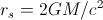
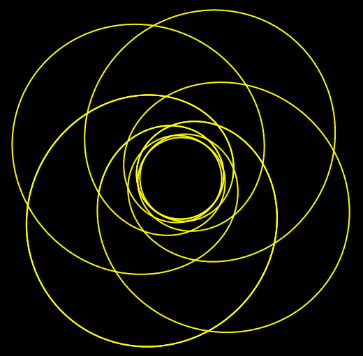

In the training example, we consider time-like geodesics in the metric of a Schwarzschild black hole with a cosmic string, cf. [Phys. Rev. D 34 (1986), 2263-2266]. The corresponding line element reads

where β is the string parameter and  is the Schwarzschild radius.
- Start the GeodesicViewer and set metric/integrator...
Start or reset the GeodesicViewer and select 'CosmicStringSchwarzschild' in the Metric tab. Set the metric parameters to beta=0.8 and mass=1.0.
Switch to the Integrator tab and select the Runge-Kutta-Fehlberg integrator. Activate step-size control, set the absolute error parameter eps abs=1e-12, and increase the maximum number of points to be calculated to max points=6000.
- Initial position and local reference frame...
In the Position tab, change the initial position to r=7.0. Then, go to the Tetrad Directions tab and change the local reference frame to 'inward'.
- Initial direction and velocity...
Select 'timelike' in the type combo box in the Geodesic window and set the velocity to β=0.49 (Note that this β is different from the metric parameter β.)
Modify the initial angle ξ until the geodesic looks like this:

- View parameters for 3D representation...
To reproduce the 3D view, change the representation type to 'embedding diagram', set the point of interest to poi z=12, and rotate the view by using the 'rotate on sphere' mouse control. To enhance the three-dimensional view, add an artifical fog of density=0.015 to the scenary. As the embedding surface is too small with the predefined parameters, set the parameters to emp_phi_num=100, emb_r_num=40, emp_rmax=25, and emp_rmin=2.
- Effective potential in the 2D view...
To identify the turning points of the time-like geodesic in this space-time, we use the effective potential in the Draw 2D view. Go to the 2D tab within the DrawHandling window and select 'effective potential' in the combo box in the upper left corner. Then, use the mouse control to zoom into the region [x=1.45:28.1, y=0.415:0.502] or set the minimum and maximum values for the abscissa and the ordinate. The intersection between the 'effective potential' (red line) and the 'total energy' (blue line) gives the minimal and maximal radial coordinate.
- Parameter files...
The parameter files can be seen here: